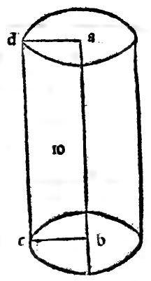

CAPITOLO LXI¶
Dele colonne laterale pentagona.
Nel terzo luogo sonno le colonne laterale pentagone cioè quelle de 5 facce commo qui la figura A. B. che ciascuna fia tetragona ouer quadrilatera. E le basi di queste simili colonne sempre sonno doi pentagoni cioè doi figure rectilinee de 5 lati ouer anguli. Peroche in tutte le figure rectilinee el numero deli angoli se aguaglia al numero deli suoi lati, e altramente non possano stare. E queste ancora hano a essere equilatere e inequilatere secondo chele lor basi permetteranno: si commo poco inanze dele laterale quadrilatere se diclo.
Conciosia che alcuni pentagoni sienno equilateri e equianguli. e altri inequilateri e per consequente inequianguli. Ma ogni pentagono che habia 3 anguli fra loro equali sei sira equilatero de necessita sira ancora equiangulo. commo demo.stra la septima del 13. Questo se dici perche poteria el pentagono hauere lati equali con doi angoli fra loro equali, non pero serebe tutto equiangulo. E questi doi pentagoni cioè superiore e inferiore pur similmente con la equidistantia de loro altezza in dieta colonna se hano a intendere. O sienno le colonne equilatere o inequilatere commo se voglino.
E perche excelso Duca le specie dele colonne laterale possano in infinito acrescere secondo la varietà dele figure rectilinee de più e manco lati. Peroche de ogni colonna laterata conuengano le suoi doi basi, cioè suprema e inferiore de necessita essere doi figure rectilinee simili, cioè che conuenghino nel numero de lati non fosse vna triangola e laltra tetragona, e ancora equilatere e equiangole fra loro ala vniformita dele colonne quantunca diuersamenle facino varietà in epse fermandole aleuolte equilatere e aleuolte inequilatere.
Per la qual cosa non me pare in diete più olirà extenderme ma solo indure a memoria che la loro denominatione sempre deriua dele basi, cioè secondo scranno le basi cosi sonno dette, verbi gratia. se le basi sonno triangule commo fo disopra nel corpo seraiile se diranno triangule. E se siranno tetragone ouer quadrilatere siranno diete quadrangole. E se pentagone pentagone. E se de 6 lati scranno chiamate exagone et sic de singulis. Ma sienno le basi di che qualità si veglino sempre le facce da ciascuna siranno tetragone rectangole.
E de luna e de laltra fin qua le lor forme materiali alochio demostrano quello se dicto al numero per loro taula posto. E anco in questo disotto in figura piana in prospectiua al medesimo numero comnie porrà vostro celsitudine vedere, i)
Marginal Woodcut Diagrams (Paganini 1509)¶

Folio 0053 Diagram 1¶